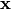
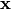

resolve.iterative¶
| supreme.resolve.iterative.solve | |
| supreme.resolve.iterative.default_camera | |
| supreme.resolve.iterative.cost_squared_error | |
| supreme.resolve.iterative.iresolve | |
| supreme.resolve.iterative.initial_guess_avg | |
| supreme.resolve.iterative.cost_prior_xsq |
solve¶
- supreme.resolve.iterative.solve(images, tf_matrices, scale, x0=None, tol=1e-10, iter_lim=None, damp=0.10000000000000001, method='CG', operator='bilinear')¶
Super-resolve a set of low-resolution images by solving a large, sparse set of linear equations.
This method approximates the camera with a downsampling operator, using bilinear interpolation. The LSQR method is used to solve the equation where
 is the
downsampling operator,  is the high-resolution
estimate (flattened in raster scan or lexicographic order), and
is the
downsampling operator,  is the high-resolution
estimate (flattened in raster scan or lexicographic order), and
 is a stacked vector of all the low-resolution
images.
is a stacked vector of all the low-resolution
images.Parameters: images : list of ndarrays
Low-resolution input frames.
tf_matrices : list of (3, 3) ndarrays
Transformation matrices that relate all low-resolution frames to a reference low-resolution frame (usually images[0]).
scale : float
The resolution of the output image is scale times the resolution of the input images.
x0 : ndarray, optional
Initial guess of HR image.
damp : float, optional
If an initial guess is provided, damp specifies how much that estimate is weighed in the entire process. A larger value of damp results in a solution closer to x0, whereas a smaller version of damp yields a solution closer to the solution obtained without any initial estimate.
method : {‘CG’, ‘LSQR’, ‘descent’}
Whether to use conjugate gradients, least-squares or gradient descent to determine the solution.
operator : {‘bilinear’, ‘polygon’}
The camera model is approximated as an interpolation process. The polygon interpolation operator works well for zoom ratios < 2.
Returns: HR : ndarray
High-resolution estimate.
default_camera¶
- supreme.resolve.iterative.default_camera(img_nr, img, H, scale, oshape, std=1.0, _coords=[])¶
The default camera model simply blurs and downscales the image.
Parameters: img_nr : int
The number of this image in the set. Useful for storing image-specific parameters, such as coordinates.
img : ndarray
High-resolution image data.
H : (3,3) ndarray
Transformation matrix to apply to img.
oshape : tuple of ints
Output shape.
std : float
Standard deviation of the blur mask.
_coords : ndarray
Coordinates suitable for use in ndimage.map_coordinates.
iresolve¶
- supreme.resolve.iterative.iresolve(images, tf_matrices, scale=1.3, initial_guess=<function initial_guess_avg at 0x1067ea230>, initial_guess_args={}, camera=None, camera_args={}, cost_measure=None, cost_args={})¶
Super-resolve a set of low-resolution images.
Parameters: images : list of ndarrays
Low-resolution input frames.
tf_matrices : list of (3, 3) ndarrays
List of transformation matrices to transform each low-resolution frame to a reference image (typically, images[0]).
scale : float
Resolution improvement required.
initial_guess : callable, f(imgs, Hs, scale, oshape, **initial_guess_args)
Function that calculates an initial estimate of the high-resolution image for initialising the iterative process. If not specified, initial_guess_avg is used. See initial_guess_avg for more information.
initial_guess_args : dict, optional
Optional keyword arguments for initial_guess.
camera : callable, f(nr, img, H, scale, oshape, **camera_args), optional
Function that emulates the effect of the camera on a high-resolution frame. See the docstring of default_camera for more detail. If not specified, default_camera is used.
camera_args : dict, optional
Optional keyword arguments for camera.
cost_measure : callable, f(nr, x, y, **cost_args)
Function that calculates the difference between two low-resolution frames. If not specified, cost_squared_error is used.
cost_args : dict, optional
Optional keyword arguments for cost_measure.
Returns: out : ndarray
Super-resolved image.
initial_guess_avg¶
- supreme.resolve.iterative.initial_guess_avg(images, tf_matrices, scale, oshape)¶
From the given low-resolution images and transforms, make an initial guess of the high-resolution image.
Parameters: images : list of ndarray
Low-resolution images.
tf_matrices : list of (3, 3) ndarray
Transformation matrices that warp the images to the reference image (usually images[0]).
scale : float
The scale of the high-resolution reconstruction relative to the low-resolution frames. Typically between 1 and 2.
oshape : tuple of int
Shape of the high-resolution reconstruction.